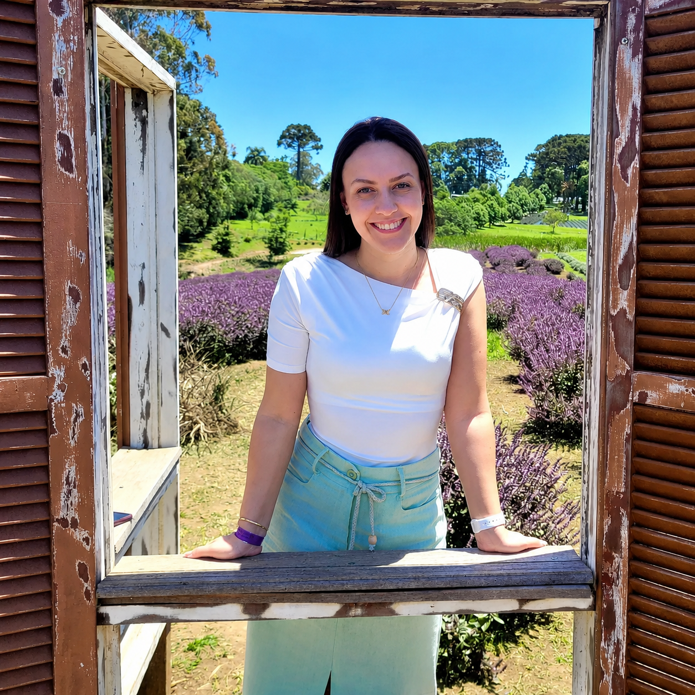

Ao lado de mães que precisam recomeçar.
Proteção jurídica humanizada e firme para você e seu filho. Divórcio, guarda, pensão e salário-maternidade conduzidos com sensibilidade e técnica.
"Minha missão é garantir que seus direitos e os do seu filho sejam respeitados com dignidade."
Dra. Mirela
Direitos que protegem você e seu filho.
Divórcio
Condução estratégica e acolhedora, com proteção patrimonial e foco na sua dignidade, seja consensual ou litigioso.
Guarda e Convivência
Defesa firme da guarda materna e regulamentação de visitas, sempre priorizando o bem-estar emocional do seu filho.
Pensão Alimentícia
Cálculo justo, ação de fixação e execução rápida em caso de atraso. Seu filho não pode esperar.
Salário-Maternidade
Recurso contra negativas do INSS e garantia do benefício para empregadas, autônomas, MEI e desempregadas.
Inventário
Condução de inventários judiciais e extrajudiciais, com partilha de bens organizada e sem desgaste para a família.
Benefícios do INSS
Análise, requerimento e recursos de benefícios previdenciários negados, do pedido inicial à via judicial.
Se sim, você não precisa enfrentar isso sozinha.
- A pensão do seu filho está atrasada e você não sabe o que fazer.
- Seu ex-companheiro está ameaçando tomar a guarda da criança.
- Você quer se divorciar mas tem medo da reação e da partilha.
- O INSS negou seu salário-maternidade e você precisa do dinheiro.
- Você descobriu uma traição e está perdida entre emoção e direitos.
- Você é mãe solo e precisa formalizar a paternidade e a pensão.

Uma advogada que entende o seu lugar.
Sou Mirela Ruchert, advogada inscrita na OAB/SC 72.612 e especialista em Direito de Família. Construí minha trajetória profissional cuidando de mulheres em momentos de virada: separações difíceis, disputas de guarda, pensões em atraso, e o silêncio pesado do recomeço.
Acredito que a técnica jurídica precisa caminhar junto com a escuta. Cada mãe que me procura é, antes de tudo, uma mulher que merece ser ouvida sem pressa e defendida com firmeza.
Meu trabalho é transformar vulnerabilidade em segurança, para você e para os seus filhos.
Mirela Ruchert
Um caminho seguro, do primeiro contato à decisão.
Transparência e acolhimento em cada etapa do seu processo jurídico.
Escuta acolhedora
Ouço a sua história em uma conversa reservada. Entendo o cenário emocional, jurídico e financeiro sem julgamentos.
Plano estratégico
Apresento os caminhos possíveis com clareza, prazos realistas, custos e o que esperar de cada decisão.
Execução firme
Conduzo o processo com técnica e presença constante. Você é atualizada a cada passo, sem juridiquês.
Histórias de quem encontrou um novo começo.
Antes de conversarmos, talvez você queira saber.
A primeira consulta é feita por uma conversa reservada, presencial ou online, onde você conta sua história com calma. A partir daí, apresento um panorama jurídico inicial e os próximos passos possíveis para o seu caso.
Atendo em todo o Brasil, de forma 100% online por videochamada ou WhatsApp, e também presencialmente em Santa Catarina, conforme a necessidade do processo.
Um divórcio consensual costuma ser resolvido em poucas semanas. Já um divórcio litigioso pode levar alguns meses, dependendo da complexidade da partilha de bens e das questões envolvendo os filhos.
O valor da pensão é calculado com base nas necessidades da criança e na capacidade financeira de quem paga, geralmente entre 20% e 30% dos rendimentos, podendo variar conforme decisão judicial ou acordo entre as partes.
Sim. Negativas do INSS podem ser recorridas administrativamente ou por via judicial. Analiso seu caso e indico o caminho mais rápido e seguro para garantir seu direito ao benefício.
Basta clicar no botão do WhatsApp no site e me chamar. Casos urgentes, como risco à guarda ou pensão atrasada, são priorizados com retorno rápido.